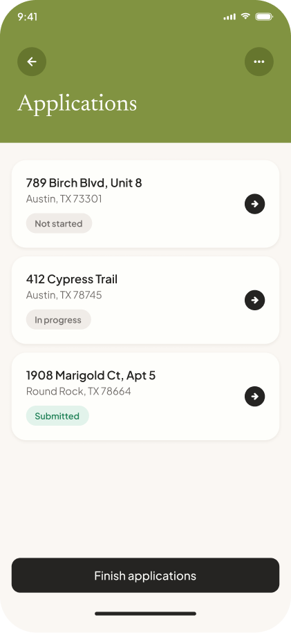
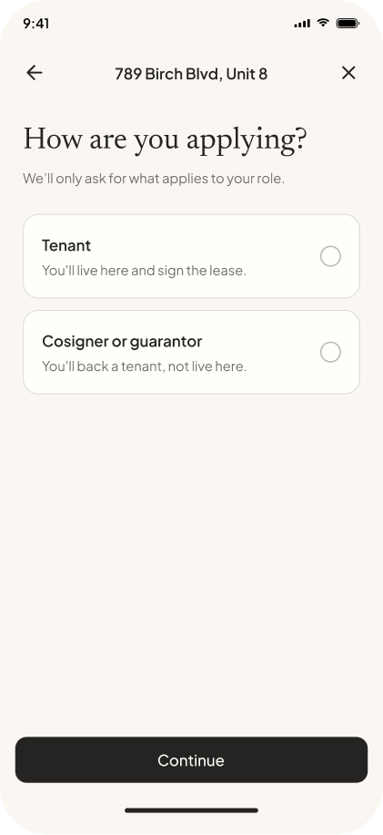
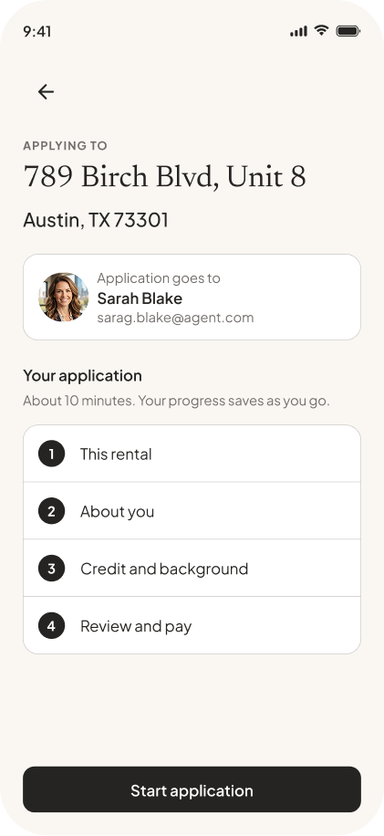
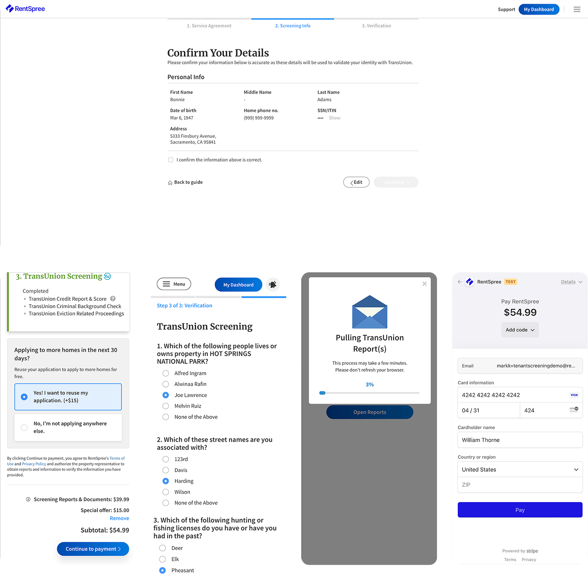

Rental applications ask people to gather personal information, pay for screening reports, and send sensitive details to an agent. RentSpree’s previous experience made it difficult to track progress, catch mistakes, and know when the application was actually submitted.
The redesign focused on making those moments clear: helping applicants resume their work, review their details before reports were generated, and understand the difference between paying and submitting. Improving completion also supports a core part of RentSpree’s business.



The problem
Applicants often stop to gather documents or confirm details, then come back later. The previous flow didn’t show how much was left or where to resume.
Some applicants found mistakes in details they had entered themselves only after their screening reports had been generated. The previous flow gave them no clear moment to check their own information first.
Applicants couldn’t tell when their application and reports had actually been sent to the agent. The experience could look finished while review and submission steps still remained.
The overview makes completed and remaining sections visible, gives returning applicants a clear place to resume, and lets them edit completed sections directly.
A completed section shows a check and an Edit action, so fixing an answer never means walking back through the flow. The current section keeps its number, so what comes next stays clear.
Start application becomes Continue when someone returns.
The agent receiving the application is named at the top. Applicants are sharing sensitive financial information, so they should know who will receive it.
Conditional questions expand inline, so the overview keeps its four main sections. Additional adults receive their own application, and the optional count of occupants under 18 is used only for household size.
Support requests showed that some applicants discovered mistakes in their own information only after screening reports had been generated. Field validation could not catch every incorrect detail, so the redesigned flow adds a full review before payment starts the reports.
A misspelled legal name, an outdated address, a transposed digit. The review helps applicants check what they entered; it can’t resolve inaccuracies that originate in the reports themselves.
Every section can be edited directly from the review page.
Applicants can correct their details before payment triggers report generation.
“Check everything before it goes to Sarah. You can still edit.” One line names who will receive the application and says there’s still a chance to edit.
An earlier version moved payment to the beginning. Payment conversion increased, but the change did not solve abandonment, and refund requests rose. Applicants could still mistake payment for completion.
The redesigned flow separates the commitments: review application details, pay to generate reports, review those reports, then submit to the agent.
Payment comes after the application review.
The page says paying starts the reports, and that applicants will review them before sending the application to the agent.
The total shows what the fee includes, including the optional reusable package.
Hypothesis
If applicants understand what each step commits them to, fewer will mistake paying for submitting, and more will finish the application.
The 3.0 redesign launches in 2027. After launch, we’ll track three measures. Total completion shows whether more applicants finish. Completion after payment shows whether people who pay go on to submit. Refund requests show whether applicants understood what they were paying for.
Using Claude Code and RentSpree’s design system, I built the application as a working prototype instead of a series of static screens. Product, Design, and Engineering could move through the connected flow together and assess its content, navigation, and the transitions from review to payment to submission.
A clearer application also gives agents and landlords better information to screen with. Beyond the application, there’s a broader opportunity: if applicants choose to save a payment method, it could make deposits and rent easier after approval.
